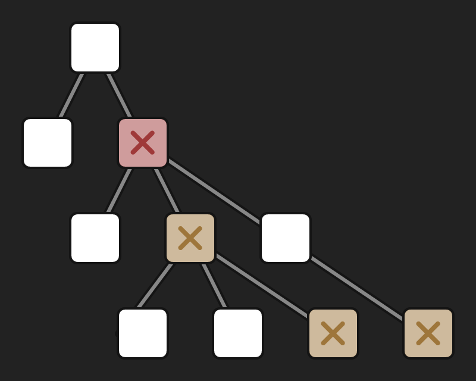
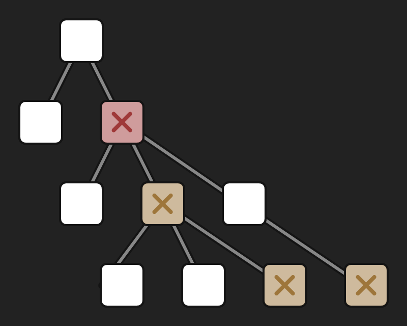

Thinking With Prototypes
Created by Carl Olsen / @unstoppableCarl
Who has written something like this before?
var User = function User(name){
this.name = name;
};
User.prototype = {
greet: function(){ return 'Hi my name is ' + this.name; }
};
var steve = new User('Steve');
steve.greet(); // Hi my name is Steve
Then extended it
var LoudUser = function LoudUser(name, volume){
User.prototype.constructor.call(this, name);
this.volume = volume;
};
LoudUser.prototype = {
volume: 1,
greet: function(){
var greeting = User.prototype.greet.call(this);
return greeting.toUpperCase() + '!'.repeat(this.volume);
}
};
var loudLarry = new LoudUser('Larry', 3);
loudLarry.greet(); // HI MY NAME IS LARRY!!!
Types Of Inheritance
Subtyping Ineritance (Classical)
- Instances inherit from and are tightly coupled to a single blueprint (the class)
- Creates X is a Y relationships
- Creates class hierarchies as a side-effect of sub-class creation
Implementation Inheritance (Prototypal)
- Instances inherit from other instances
- Creates X can do Y relationships
Problems With Classical Inheritance
 

Hierarchies
Bug
Dependent On Bug
All or Nothing
You must inherit the whole class
“The problem with object-oriented languages is they’ve got all this implicit environment that they carry around with them. You wanted a banana but what you got was a gorilla holding the banana and the entire jungle.”‐ Joe Armstrong
creator of Erlang
Js does not actually have
classical inheritance
But ES6 Has the class keyword…
... Not really an implementation of classical OOP
The ES6 class implementation still has some problems
So what should you use instead of classes?
Factories
Any function can instantiate and return objects. When you do so without a constructor, it is called a factory function.
- Js has no limitations when creating objects at runtime.
- You do not have to use
newor a constructor.
Classes vs Factories
Classes (in ES5 and ES6) do not give you ANYTHING that is not already supplied by factory functions and the prototypal OO built into js.
When you create a class you are opting into a less powerful, less flexible mechanism than a simple factory.
Lets See Some Code
Concatenative Inheritance
// player game object example
var movementTrait = {
move: function(distance){ }
};
var solidTrait = {
collide: function(object){ }
};
var player = _.assign({}, movementTrait, solidTrait); // same as Object.assign() or _.extend
Composable Factory
AKA functional mixins
// simple example factory
var thingFactory = function(obj, settings){
obj = obj || {};
settings = settings || {};
// compose code
var proto = {
config: { flag: true },
whatever: function() {}
};
_.assign(obj, proto); // same as Object.assign() or _.extend
// @TODO init / constructor code using settings
return obj;
};
var a = thingFactory();
This is the Only Best Simplest way to do this.
Composing Factories
// object instance factory, NOT intended to be composed
// DO NOT USE in other factories to avoid nested dependencies
// I prefix these functions with `make` to denote this
var makeFoo = function(settings){
var obj = {};
obj = thingFactory(obj, settings);
obj = otherFactory(obj, settings);
return obj;
};
var foo = makeFoo({
cacheOrWhatever: true,
someOtherSetting: false,
});
Example Problem: Class
var foo = new Foo();
foo.someFunc(); // behavior needs to be changed
The behavior of foo.someFunc() needs to be changed, but multiple sub-classes depend on the current behavior of Foo.prototype.someFunc()
Who thinks they have a solid solution to this?
Example Problem: Factory
var makeFoo = function(settings){
var obj = {};
obj = thingFactory(obj, settings);
obj = otherFactory(obj, settings); // adds `someFunc` to obj
return obj;
};
var foo = makeFoo();
foo.someFunc(); // behavior needs to be changed
The behavior of foo.someFunc() needs to be changed, but other objects depend on the current behavior of someFunc() provided by the otherFactory()
Who thinks they have a solid solution to this?
Factory Solutions
var makeFoo = function(settings){
var obj = {};
obj = thingFactory(obj, settings);
// obj = otherFactory(obj, settings);
obj = altFactory(obj, settings); // swap out the factory completely
return obj;
};
var makeFoo = function(settings){
var obj = {};
obj = thingFactory(obj, settings);
obj = otherFactory(obj, settings);
obj = additionalFactory(obj, settings); // add a new factory
return obj;
};
Composable object factories
Bar Example: Requirements
var defaults = {
name: 'my bar',
specials: 'todays specials',
location: {lat: null, lng: null}
};
var members = {
add: function(member) {
this.members[member.name] = member;
},
getMember: function(name) {
return this.members[name];
},
members: {} // new obj per instance
};
var availability = {
close: function(){ /* close bar */},
open: function(){ /* open bar */},
isOpen: fucntion() { /* check if bar is open */ }
}; // handle internal availability status privately
Bar Example: Defaults
var defaultsStamp = stampit().props({
name: 'The Bar',
specials: 'Vodka with Vodka',
location: { lat: null, lng: null }
});
var myDefaults = defaultsStamp({
name: 'Moes Bar',
location: {
lat: 1.5,
lng: 2.3
}
});
myDefaults.name; // 'Moes Bar'
myDefaults.specials; // 'Vodka with Vodka'
myDefaults.location; // { lat: 1.5, lng: 2.3 }
var d1 = defaultStamp();
var d2 = defaultStamp();
d1.location === d2.location // false
Bar Example: Membership
var membershipStamp = stampit({
methods: {
add: function(member) {
this.members[member.name] = member;
},
getMember: function(name) {
return this.members[name];
}
},
props: {
members: {}
}
});
var myMembership = membershipStamp();
myMembership.add({name: 'Homer', status: 'sober'});
myMembership.getMember('Homer'); // {name: 'Homer', status: 'sober'}
Bar Example: Availability
var availabilityStamp = stampit().init(function(settings) {
var instance = settings.instance;
var isOpen = false; // private
instance.open = function() {
isOpen = true;
};
instance.close = function() {
isOpen = false;
};
instance.isOpen = function() {
return isOpen;
};
});
var myAvailability = availabilityStamp();
myAvailability.isOpen(); // false
myAvailability.open();
myAvailability.isOpen(); // true
Bar Example: Conclusion
// compose multiple stamps into one
var bar = stampit.compose(defaults, availability, membership);
// you can override references on instantiation
var myBar = bar({name: 'Moes Bar'});
myBar.name; // 'Moes Bar'
myBar.add({name: 'Homer', status: 'sober'});
myBar.open();
myBar.isOpen(); // true
myBar.getMember('Homer'); // {name: 'Homer', status: 'sober'}